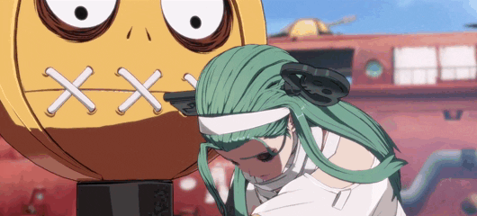

A.B.A é uma personagem de Guilty Gear, introduzida em Guilty Gear XX: The Midnight Carnival. Ela é uma jovem com aparência infantil, cabelos vermelhos e carrega um grande machado. Sua história envolve ser uma criação artificial de Paracelsus, um alquimista famoso da vida real, que tentou manipular a alquimia e a ciência para criar vida. A.B.A é resultado de um experimento e possui uma conexão com o misterioso vilão That Man. Sua personalidade é excêntrica e infantil, mas no combate ela é poderosa, utilizando um estilo baseado em um poder sombrio e manipulação de energia, relacionado ao "That Man's Key".

Música Tema de A.B.A
A música tema de A.B.A, chamada "Symphony", presente em Guilty Gear Strive, é uma composição emocionalmente intensa que combina elementos de música clássica com toques de rock moderno, criando uma atmosfera dramática e épica. A faixa reflete a personalidade complexa de A.B.A, uma personagem com uma história trágica e uma busca por identidade. Com uma melodia melancólica e momentos de grande crescimo, "Symphony" enfatiza tanto a fragilidade quanto a força da personagem, capturando seu conflito interno e a profundidade de sua jornada. O estilo musical, ao mesmo tempo suave e potente, complementa a narrativa de A.B.A e seu vínculo com o experimento e o poder misterioso que a define.
Combos de A.B.A
Os combos de A.B.A são desafiadores e exigem uma boa leitura do oponente, já que seu estilo de luta depende de variações rápidas e imprevisíveis, mas quando dominados, tornam-na uma das personagens mais técnicas e recompensadoras de se jogar em Guilty Gear Strive.